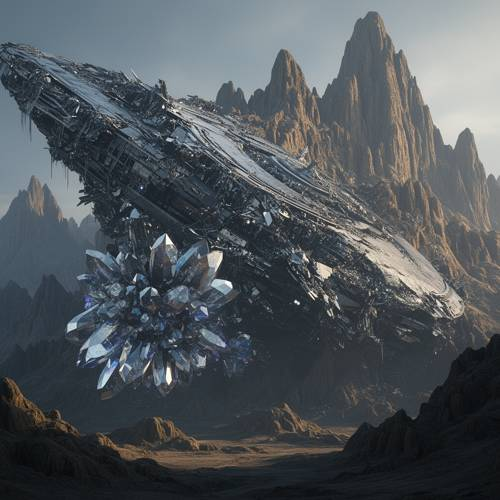
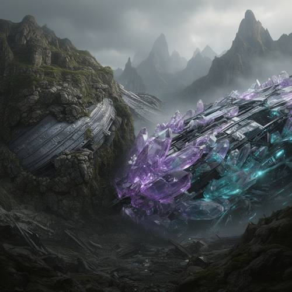
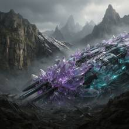

Relationship — The wreckage of a huge alien spacecraft, part of its hull made of exot
The wreckage of a huge alien spacecraft, part of its hull made of exotic metal crystals, and another part blended with ancient rocky mountains.

Direct — one call, no iteration

Continuum — Kimi K3 + FLUX.2-dev
Judge — Direct
FAILRelationship - Composition — In the image, there is a large, wrecked spacecraft and a separate, large cluster of crystals floating near its hull. The hull itself is depicted as being made of dark, greebled metallic panels and structures, not from crystals. The crystals appear to be an external component or a growth, rather than an integral material of the hull's composition.
PASSAttribute - Material — The image features a prominent cluster of large, multifaceted crystals in the lower-left portion. These crystals are translucent with a metallic sheen and have blue and purple internal reflections, visually matching the description of 'exotic metal crystals'.
PASSAction - Contact Interaction — The right side of the huge spacecraft is shown impacted against and partially embedded within a range of rocky mountains. The wreckage and the rock formations appear to be physically intertwined in the area of contact, visually representing the spacecraft being 'blended' with the mountains.
Judge — Continuum
PASSRelationship - Composition — A large section of the alien spacecraft's hull, visible on the right side of the image, is shown with numerous large crystals growing out of its metallic framework, appearing as an integrated part of its composition.
PASSAttribute - Material — The image features large, translucent, multifaceted crystals in vibrant purple and teal colors, which protrude from the spacecraft's structure. These visually correspond to the description of 'exotic crystals'.
PASSAction - Contact Interaction — On the left side of the image, a section of the spacecraft's metallic hull is embedded within a rocky, moss-covered mountainside. The rock and foliage partially cover the wreckage, creating an appearance of it being blended with the mountain.
What the agent did
Thinking
The user wants an image generated. Let me generate it with flux2-dev.
Step 1 — `generate_image`
{
"model": "flux2-dev",
"prompt": "Epic sci-fi landscape: the wreckage of a colossal crashed alien spacecraft sprawled across a rugged valley. One section of its hull is made of exotic shimmering metal crystals \u2014 huge translucent violet and teal crystalline facets fused with dark metallic struts, catching glints of light. Another section of the hull is blended seamlessly with ancient rocky mountains \u2014 stone and weathered cliff faces growing into and over the corroded hull plates, as if the ship has been embedded in the range for millennia. Jagged peaks rise behind it, mist drifting between broken hull sections, scattered debris and faint glowing energy lines along the crystalline surfaces. Overcast dramatic sky, atmospheric depth, cinematic wide shot, photorealistic concept art style."
}
Result img_0

Thinking
The image shows a crashed alien spacecraft with crystalline hull (violet/teal crystals, dark metallic struts, glowing lines) and on the left a section blended into the rocky cliff/mountainside. Mountains, mist, overcast sky. This looks quite good. The "blended with ancient rocky mountains" part — the left section shows hull merging into cliff. Could be stronger, but it's decent. Let me inspect a bit, maybe the blend part could be more pronounced. Actually the image reads well. I might do one edit to strengthen the stone-hull fusion on the left. But honestly it's already good. Mark best. The left part does show a metallic hull section emerging from the cliff — decent blend. I think this satisfies the prompt. Mark best and stop. Maybe one improvement: make the rock-blended portion more clearly fused — hull plates covered in stone/moss. Let me try one edit to strengthen that, then compare.
Step 2 — `edit_image`
{
"image": "img_0",
"model": "flux2-dev",
"prompt": "On the left side, make the hull section that meets the cliff more deeply fused with the ancient rock: corroded hull plates partially covered by overgrown stone, weathered rock strata growing over the metal edges, moss and erosion blending ship and mountainside into one form, as if embedded for millennia."
}
Result img_1
Thinking
img_1 shows the left hull section now heavily overgrown with rounded rocky boulder-like growth and moss, fused with the cliff. The crystalline section remains. This is a strong match. Mark best img_1. Good enough — stop.
Step 3 — `mark_best`
{
"image": "img_1",
"reason": "All prompt elements present and strong: colossal wrecked alien spacecraft, exotic violet/teal metal-crystal hull section, and a left hull section now deeply fused with ancient overgrown rock and mountainside, with dramatic misty peaks and atmospheric lighting."
}
Model
Done! The final image shows the colossal alien wreck sprawled across a misty mountain valley: - **Crystalline hull:** one section of the ship is made of exotic translucent violet and teal metal crystals, fused with dark metallic struts and faintly glowing energy lines. - **Rock-fused hull:** the left section is deeply blended into the ancient mountainside — corroded hull plates overgrown with weathered stone, moss, and erosion, as if the ship has been embedded in the range for millennia. - **Atmosphere:** jagged peaks, drifting mist, and an overcast dramatic sky give it a cinematic, epic scale. The image has been marked as the best result and is ready for you.